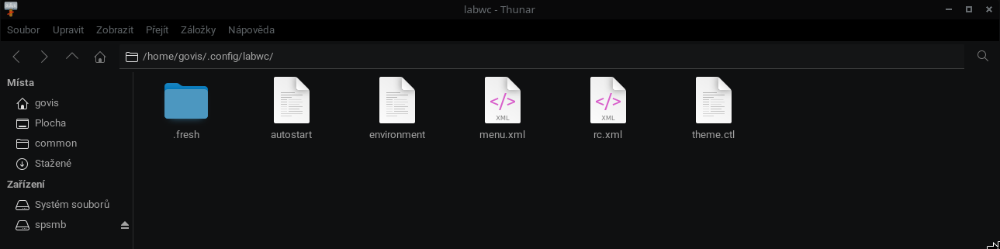

Pokročilá Deklarativní Konfigurace a Anatomie XML Schémat
Cíl kapitoly: Detailně rozebrat strukturu konfiguračních souborů Labwc, vysvětlit parsování XML značek kompozitorem a demonstrovat reálnou konfiguraci uživatelského prostředí včetně klávesových maker a systémových proměnných.
Na rozdíl od moderních monolitických prostředí, která ukládají uživatelská nastavení do binárních databází (např. dconf v GNOME) nebo vyžadují složité imperativní skripty, sází Labwc na čistě **deklarativní textovou konfiguraci**. Veškeré chování systému je striktně definováno v lidsky čitelných konfiguračních souborech lokalizovaných v adresáři ~/.config/labwc/. Tento přístup oceňují systémoví inženýři, protože textové soubory lze snadno verzovat pomocí nástroje Git, automatizovat jejich nasazení přes Ansible nebo je bezproblémově sdílet napříč firemní infrastrukturou (tzv. správa *dotfiles*).
Podrobná taxonomie konfiguračních souborů
rc.xml (Řídicí centrum kompozitoru)
- Tento soubor představuje mozek celého prostředí. Při inicializaci grafické relace Labwc spustí interní parser (založený na knihovně libxml2), který načte strukturu tagů. XML schéma definuje parametry oken, chování myši, fokusování ploch a komplexní matici klávesových zkratek. Obsahuje také pokročilé direktivy pro vynucení specifických vlastností oken (např. potlačení dekorací pro specifické třídy aplikací skrze okenní pravidla `windowRules`).
autostart (Asynchronní inicializační skript)
- Klasický POSIX-kompatibilní shell skript, který Labwc exekvuje přesně v momentě, kdy je úspěšně dokončena inicializace Wayland socketu a grafického serveru. Jelikož samotný kompozitor záměrně neobsahuje kód pro panely nebo tapety, skript autostart slouží k asynchronnímu spuštění těchto doprovodných subsystémů. Každý volaný proces musí být ukončen operátorem
&, aby běžel na pozadí a nezpůsobil zablokování vykonávání skriptu. environment (Globální stavové proměnné)
- Klíčový konfigurační soubor obsahující klíč-hodnota dvojice systémových proměnných (Environment Variables). Tyto proměnné jsou exportovány do systémového prostředí ještě před samotným spuštěním grafických knihoven. To je klíčové pro správné fungování toolkitů jako GTK, Qt nebo Electron, kterým tak explicitně nařídíme nativní renderování přes Wayland namísto emulace přes XWayland.
menu.xml (Struktura statických nabídek)
- Definuje hierarchickou strukturu kontextového menu, které se vyvolá stiskem definovaného tlačítka myši (zpravidla pravého) na ploše. Využívá zanořené tagy
<menu>,<item>a<action>, což umožňuje uživateli vytvářet přehledné nabídky pro rychlé spouštění kritických aplikací, správu napájení nebo spouštění vlastních diagnostických skriptů.

Produkční ukázka reálné konfigurace (rc.xml)
Následující kód demonstruje reálnou implementaci konfiguračního souboru rc.xml. Obsahuje konfiguraci vizuálního motivu Material-Black-Lime, hardwarové zaoblení rohů oken (cornerRadius), aktivaci adaptivní synchronizace monitoru a sadu uživatelských zkratek pro spouštění terminálu Alacritty, aplikačního menu Wofi, prohlížeče Helium a nástrojů pro tvorbu snímků obrazovky:
<?xml version="1.0" encoding="UTF-8"?>
<labwc_config>
<!-- Konfigurace vizuálního subsystému a písem -->
<theme>
<name>Material-Black-Lime</name>
<cornerRadius>8</cornerRadius>
<font name="sans" size="10" />
</theme>
<!-- Matice klávesových zkratek (Keybindings) -->
<keyboard>
<default />
<!-- Spuštění emulátoru terminálu Alacritty (Super + Q) -->
<keybind key="W-q">
<action name="Execute" command="alacritty" />
</keybind>
<!-- Inicializace dynamického aplikačního menu Wofi (Super + Y) -->
<keybind key="W-y">
<action name="Execute" command="wofi --show drun" />
</keybind>
<!-- Spuštění webového prohlížeče Helium-Browser (Super + W) -->
<keybind key="W-w">
<action name="Execute" command="helium-browser" />
</keybind>
<!-- Spuštění grafického správce souborů PCManFM (Super + E) -->
<keybind key="W-e">
<action name="Execute" command="pcmanfm" />
</keybind>
<!-- Zachycení výřezu obrazovky pomocí nástrojů Grim a Slurp (Super + S) -->
<keybind key="W-s">
<action name="Execute" command="sh -c 'grim -g "$(slurp)" - | wl-copy'" />
</keybind>
</keyboard>
<!-- Mapování akcí polohovacích zařízení -->
<mouse>
<default />
<context name="Root">
<mousebind button="Right" action="Press">
<action name="ShowMenu" menu="root-menu" />
</mousebind>
</context>
</mouse>
<!-- Nízkoúrovňové ladění grafické smyčky -->
<core>
<AdaptiveSync>yes</AdaptiveSync>
<vblank>false</vblank>
</core>
</labwc_config>Pokročilý management vizuálních témat
Jednou z největších předností Labwc je jeho plná zpětná kompatibilita s tématy formátu Openbox (soubory s příponou .obt nebo textové definice prvků `themerc`). Kompozitor parsuje soubory schémat umístěné v `/usr/share/themes/` nebo `~/.themes/`. Téma definuje barvy aktivních a neaktivních okrajů, šířku rámečků v pixelech a bitmapové XBM vzory pro vykreslení ikonických ovládacích tlačítek (minimalizace, maximalizace, zavření). To umožňuje uživatelům plynule aplikovat tisíce již existujících témat z komunitních portálů.